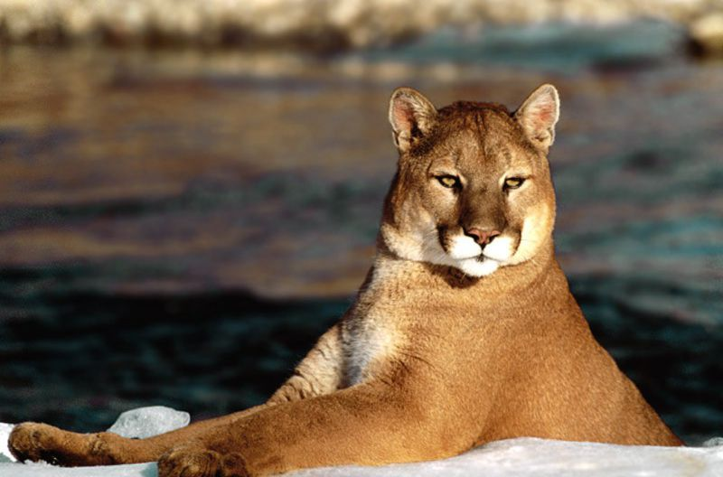

美洲狮（学名：Puma concolor）又称美洲金猫，大小和花豹相仿，但外观上没有花纹且头骨较小。体长130～200厘米，尾长约100厘米，肩高55～80厘米，体重35～100千克，为猫亚科中最大者。雄性比雌性大近1倍。躯体均匀，四肢中长，趾行性。头大而圆，吻部较短，视、听、嗅觉均很发达。犬齿及裂齿极发达；上裂齿具三齿尖，下裂齿具2齿尖；臼齿较退化，齿冠直径小于外侧门齿高度。皮毛柔软，全身为单一的灰色、红棕色或红色。前足5趾，后足4趾；爪锋利，可伸缩。尾较发达。
识别：美洲狮
形态特征
美洲狮有几处与狮子相似：一是耳朵背后有黑色斑，二是尾巴末端有一丛黑毛，三是幼仔身上也有暗色的斑点，四是体色与狮子相似。除此之外它与狮子尚有许多不同之处：体型比狮子小、细，四肢较长，没有鬣毛。它们还有爬树的本领，美洲狮的近亲除了美洲的细腰猫，还有远在非洲的猎豹。
生活习性
美洲狮常相居在山谷丛林中，尤其喜欢在树上活动，它跳跃能力很强，轻轻一跃能达8、9多米远，在美洲，它们是仅次于美洲虎的猛兽。但却具有温顺的性格，在一般情况下，它并不主动袭击人，只是当人攻击它时，为了自卫，才会伤杀袭击者。
·····························································································